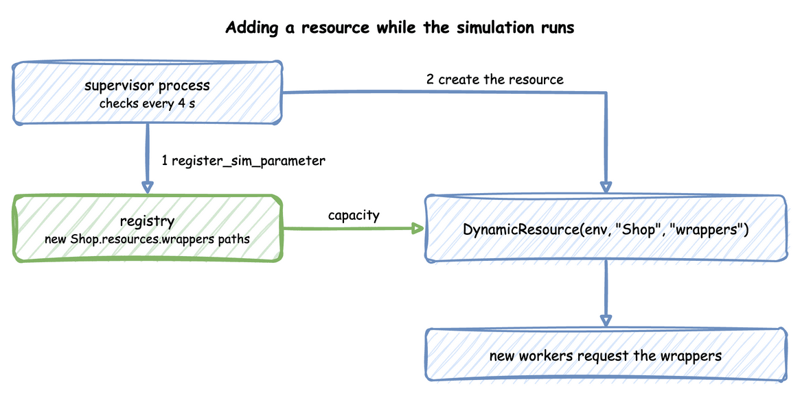

Sometimes the layout itself changes during a run: a dock opens a new bay, or a shop adds a gift wrapping station. Here a supervisor process adds gift wrappers at 12 seconds, and from then on new jobs go to the wrappers as well as the packers.

A blueprint and the builder create their resources before the clock starts and have no setting that adds one later. A process can add one, because it has the environment. A low-level script adds one the same way. When you know the resource in advance, you can declare it with no units and give it units in a scenario step, as the last step shows.
Before You Start
Low-level API explains how to register parameters and create resources.
Live Parameters explains the registry paths a resource reads.
Processes shows how a blueprint and the builder run a process.
Steps
Keep the Resources in a Mapping
Keep the resources that exist in a mapping, so the process that starts new work also finds a resource added later.
Register a Parameter for the New Resource
When the layout changes, register a SimParameter that holds only the new resource. The registry adds its paths, here Shop.resources.wrappers.current_cap, Shop.resources.wrappers.max_cap and Shop.resources.wrappers.queue_limit, which is None while the resource has no limit. A limit is changed through the path: queue_limit on the resource is read only.
Create the Resource and Add It
Create the DynamicResource for it, which reads its capacity from those paths, and add it to the mapping.
Start Work on the New Resource
Start work on it as on any other resource.
The code below does all four. In a blueprint and in the builder, the supervisor is a process that receives the context, and context.env is the environment. In the low-level API it is a SimPy process of the script:
simulation:{sim_id:Shop, factor:0}egress:-{type:Console}resources:packers:{current_cap:1, max_cap:5}processes:# Called as supervisor(context); it adds the wrappers during the run-{function:!pythondynamic_topology_logic.supervisor}run:{until:20 s}
dynamic_topology_logic.py beside it holds the supervisor:
defsupervisor(context):"""Starts a job on every resource each round, and adds the wrappers at 12 s."""env=context.env# the environment, as a low-level script has itresources={"packers":context.get_resource("packers")}job_id=0whileTrue:yieldenv.timeout(NEW_JOBS_EVERY)ifenv.now>=ADD_WRAPPERS_ATand"wrappers"notinresources:env.registry.register_sim_parameter(SimParameter(sim_id="Shop",resources={"wrappers":CapacityConfig(current_cap=2,max_cap=5)},))resources["wrappers"]=DynamicResource(env,"Shop","wrappers")env.publish_event("supervisor",{"status":"wrappers_added","capacity":resources["wrappers"].capacity,},)fornameinlist(resources):env.process(worker(env,resources,name,job_id))job_id+=1
app=(SimulationContext(sim_id="Shop",factor=0).add_egress(ConsoleEgress()).add_resource("packers",current_cap=1,max_cap=5)# Called as supervisor(context); it adds the wrappers during the run.add_process(supervisor))
supervisor is the function in dynamic_topology_logic.py, which the YAML tab shows.
# Give the gift wrappers their registry paths, then create the resource# that reads its capacity from them.env.registry.register_sim_parameter(SimParameter(sim_id="Shop",resources={"wrappers":CapacityConfig(current_cap=2,max_cap=5)},))resources["wrappers"]=DynamicResource(env,"Shop","wrappers")
Declare the Resource With No Units Instead
When the resource is known before the run, declare it with current_cap: 0 and give it units with a scenario step. A job that asks for the wrappers waits in the line until the step raises current_cap. No process is needed, so a blueprint can do it alone. The step's record publishes what it did at that time, as a ground-truth record to a sink with when: labels. All three forms give the step the same record:
resources:packers:{current_cap:1, max_cap:5}# No units yet: a job that asks for one waitswrappers:{current_cap:0, max_cap:5}scenario:# At 12 seconds the wrappers get 2 units, and the step records what it did-at:12path:Shop.resources.wrappers.current_capvalue:2record:{status:wrappers_added, capacity:2}
# No units yet: a job that asks for one waitsapp.add_resource("wrappers",current_cap=0,max_cap=5)# At 12 seconds the wrappers get 2 units, and the step records what it didapp.add_scenario([{"at":12,"path":"Shop.resources.wrappers.current_cap","value":2,"record":{"status":"wrappers_added","capacity":2},}])
PARAMS=SimParameter(sim_id="Shop",resources={"packers":CapacityConfig(current_cap=1,max_cap=5),# No units yet: a job that asks for one waits"wrappers":CapacityConfig(current_cap=0,max_cap=5),},)# At 12 seconds the wrappers get 2 units, and the step records what it didSCHEDULE=[{"at":12,"path":"Shop.resources.wrappers.current_cap","value":2,"record":{"status":"wrappers_added","capacity":2},}]
Every form finishes the same jobs: the packers at 7, 11, 15 and 19 seconds, and the wrappers at 15 and 19 seconds. Use the process of the steps above when the resource, or its name, is not known until the run is under way.
Check the Result
Run desflow run dynamic_topology.yaml, python dynamic_topology_builder.py or python dynamic_topology.py. Each runs 20 simulated seconds at once, and the three print the same events:
Every 4 seconds the supervisor starts one job on each resource it has. Each job publishes queued, started and finished with the resource it used, and takes 3 seconds.
At 12 seconds the supervisor publishes {"status": "wrappers_added", "capacity": 2}, and wrappers-2 starts in the same round.
Each run ends with env.teardown(), which writes the records still in the buffers. run() calls it for the blueprint and the builder.
The wrappers' capacity is live like any other. A scenario, a connector or a process can change Shop.resources.wrappers.current_cap once the path exists, as Live Parameters describes.
# The Add Resources Mid-run guide: a supervisor adds gift wrappers at 12 seconds.# Run it with: desflow run dynamic_topology.yaml, beside dynamic_topology_logic.pysimulation:{sim_id:Shop, factor:0}egress:-{type:Console}resources:packers:{current_cap:1, max_cap:5}processes:# Called as supervisor(context); it adds the wrappers during the run-{function:!pythondynamic_topology_logic.supervisor}run:{until:20 s}
"""The Add Resources Mid-run guide: the supervisor process of the blueprint and thebuilder, which adds the gift wrappers during the run.dynamic_topology.yaml names `supervisor` with !python, and dynamic_topology_builder.pyadds it with add_process."""fromdesflowimportCapacityConfig,DynamicResource,SimParameterWORK=3.0# seconds each job takesNEW_JOBS_EVERY=4.0# seconds between rounds of new jobsADD_WRAPPERS_AT=12.0# simulation time at which the gift wrappers are addeddefworker(env,resources,name,job_id):resource=resources[name]key=f"{name}-{job_id}"env.publish_event(key,{"resource":name,"status":"queued"})withresource.request()asreq:yieldreqenv.publish_event(key,{"resource":name,"status":"started"})yieldenv.timeout(WORK)env.publish_event(key,{"resource":name,"status":"finished"})defsupervisor(context):"""Starts a job on every resource each round, and adds the wrappers at 12 s."""env=context.env# the environment, as a low-level script has itresources={"packers":context.get_resource("packers")}job_id=0whileTrue:yieldenv.timeout(NEW_JOBS_EVERY)ifenv.now>=ADD_WRAPPERS_ATand"wrappers"notinresources:env.registry.register_sim_parameter(SimParameter(sim_id="Shop",resources={"wrappers":CapacityConfig(current_cap=2,max_cap=5)},))resources["wrappers"]=DynamicResource(env,"Shop","wrappers")env.publish_event("supervisor",{"status":"wrappers_added","capacity":resources["wrappers"].capacity,},)fornameinlist(resources):env.process(worker(env,resources,name,job_id))job_id+=1
"""The Add Resources Mid-run guide, builder API: a supervisor adds gift wrappers at12 seconds.Run it with: python dynamic_topology_builder.py, beside dynamic_topology_logic.py"""importloggingfromdesflowimportConsoleEgress,SimulationContextfromdynamic_topology_logicimportsupervisorlogging.basicConfig(level=logging.INFO)app=(SimulationContext(sim_id="Shop",factor=0).add_egress(ConsoleEgress()).add_resource("packers",current_cap=1,max_cap=5)# Called as supervisor(context); it adds the wrappers during the run.add_process(supervisor))if__name__=="__main__":app.run(until=20.0)
It imports supervisor from dynamic_topology_logic.py, which the YAML tab shows.
importloggingfromdesflowimport(CapacityConfig,ConsoleEgress,DynamicRealtimeEnvironment,DynamicResource,SimParameter,)logging.basicConfig(level=logging.INFO)WORK=3.0# seconds each job takesNEW_JOBS_EVERY=4.0# seconds between rounds of new jobsADD_WRAPPERS_AT=12.0# simulation time at which the gift wrappers are addedPARAMS=SimParameter(sim_id="Shop",resources={"packers":CapacityConfig(current_cap=1,max_cap=5)},)defworker(env,resources,name,job_id):resource=resources[name]key=f"{name}-{job_id}"env.publish_event(key,{"resource":name,"status":"queued"})withresource.request()asreq:yieldreqenv.publish_event(key,{"resource":name,"status":"started"})yieldenv.timeout(WORK)env.publish_event(key,{"resource":name,"status":"finished"})defsupervisor(env,resources):job_id=0whileTrue:yieldenv.timeout(NEW_JOBS_EVERY)ifenv.now>=ADD_WRAPPERS_ATand"wrappers"notinresources:# Give the gift wrappers their registry paths, then create the resource# that reads its capacity from them.env.registry.register_sim_parameter(SimParameter(sim_id="Shop",resources={"wrappers":CapacityConfig(current_cap=2,max_cap=5)},))resources["wrappers"]=DynamicResource(env,"Shop","wrappers")env.publish_event("supervisor",{"status":"wrappers_added","capacity":resources["wrappers"].capacity,},)# One new job for every resource that exists now.fornameinlist(resources):env.process(worker(env,resources,name,job_id))job_id+=1defrun(until=20.0,factor=0):env=DynamicRealtimeEnvironment(factor=factor)env.registry.register_sim_parameter(PARAMS)env.setup_egress([ConsoleEgress()])resources={"packers":DynamicResource(env,"Shop","packers")}env.process(supervisor(env,resources))try:env.run(until=until)finally:env.teardown()# flushes the buffers and stops the threadsreturnresourcesif__name__=="__main__":run()